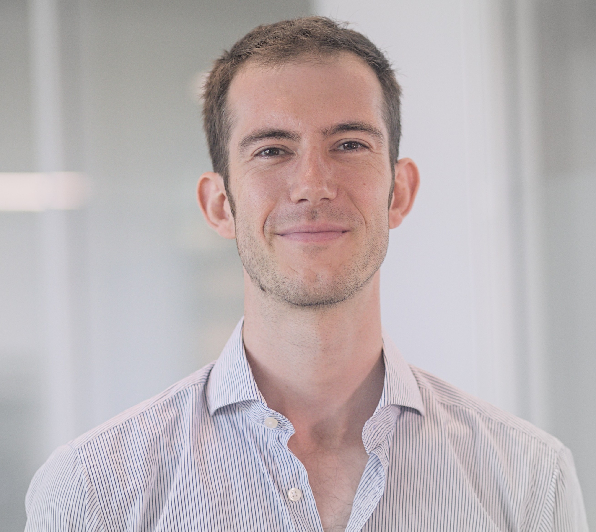

Dr Thibaut Lacroix
Postdoctoral researcher
Institut für Theoretische Physik
Universität Ulm
0000-0002-5190-040X
Researchgate
tfmlaX
Linkedin
@ThibautLacroix
About me
I'm currently a postdoctoral researcher at the Institute for theoretical physics in Ulm working on quantum effects in biological systems, and especially on the understanding of Chiral Induced Spin Selectivity (CISS) in organic molecules such as DNA.
I hold a PhD in physics awarded for my work on theoretical descriptions of dissipation at the nanoscale beyond the markovian approximation under the supervision of Brendon W. Lovett at the University of St Andrews, and Alex W. Chin at the Institut des Nanosciences de Paris (Sorbonne Université). My thesis can be read here: Beyond Markovian Dissipation at the Nanoscale.
My research interests revolve around studying the - most of the time - out-of-equilibrium dynamics of Open Quantum Systems (OQS) strongly coupled to their environment(s). This problematic is relevant for novel quantum technologies, condensed matter or biological systems (e.g. photosynthesis in plants) where strong coupling seems to be central for explaining several phenomena. More generally I work on non-Markovian OQS, i.e. when the environment is not forgetful of the past state of the system, and Tensor Networks techniques.
Prior to that, I worked in deep tech innovation at the Parisian start-up incubator Agoranov as a Junior Entrepreneur in Residence.
I graduated in general theoretical physics from the École Normale Supérieure de Lyon, and in scientific innovation from PSL Research University's Institute of Technology and Innovation (ENS de Paris, École des Mines and Observatoire de Paris). I also passed the agrégation de physique-chimie national competitive examination.
News
August 2024 — I'm thrilled about the publication in the Journal of Chemical Physics of our paper presenting the MPSDynamics.jl package written with my colleagues of the ShareLOQS collaboration! 🎊
April 2024 — My latest paper on the control of quantum nanodevices using a non-Markovian environment has been published in Quantum! 🎉
July 2023 — I'm happy to announce that I'm joining the Institute for theoretical physics in Ulm, Germany as a postdoctoral researcher.
March 2023 — I have the pleasure to announce that I have successfully defended my thesis on March, 31 at Sorbonne Université! I'm now a Doctor from the University of St Andrews and from Sorbonne Université.
Research
My current research topics are:
- Quantum effects in biological systems
- Non-Markovian dynamics in open quantum systems
- Tensor networks methods
Contact
📫 Universität Ulm, Institut für Theoretische Physik, Albert Einstein Allee 11, 89081, Ulm, Germany📧 thibaut.lacroix @ uni-ulm.de
Office: Room 4113 - Building M26
Phone: (+49)